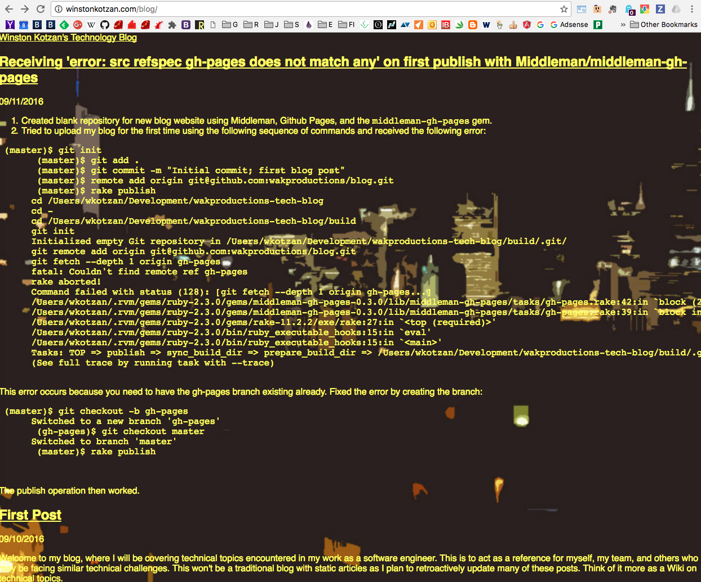
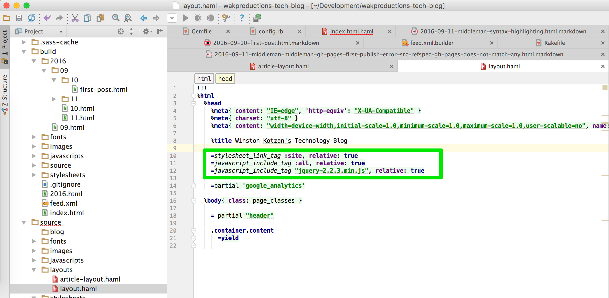

Github Organization and Project Pages under a single domain with Middleman
I have my primary website winstonkotzan.com set up as a Github Pages organization page. The repo is wakproductions.github.io. However, to start this blog I decided to create a new Middleman repo to keep all the code separate from my base website and give me more flexibility between managing the blog component and my other content. So I created a new repo called blog which would host all the content in the folder winstonkotzan.com/blog.
So Github pages have two different flavors. It's got organization pages and project pages. The organization page goes to your root at myusername.github.io while project pages show up at myusername.github.io/projectname. So basically my domain name winstonkotzan.com points to my _organization page and my blog is just a statically generated project page with the project name "blog". One of the things I always found weird about how to upload your static HTML pages is that the organization page requires the static public web pages to be in the master github branch, but the project pages require the static public web pages to be in a branch named gh-pages. It's weird becuase for my organization page I have to put all the source code in a branch called source, whereas most other repositories use master for the main branch of source code. You can read the full docs on the differences between organization and project pages here.
Upon the first upload of my blog, I had this problem with the blog pages using the wrong style sheet. This is how my website looked:

I was able to fix the problem by using the relative links identifiers in the page template.
